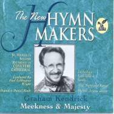

|
|
【認識你】詩集：世紀頌讚，341 |
|
[Verse 1] |
|
|
|
|
|
|
|


-
Graham Kendrick -
Knowing You at Prom Praise with the All Souls ...
-
第十二屆聖詩頌唱會
05
認識你 Knowing You
0954
https://hymnary.org/text/all_i_once_held_dear_built_my_life_upon
Kendrick, Graham, 1950-
［詞，曲作者］

https://tidal.com/browse/album/35359391
https://hymnary.org/person/Kendrick_G
Graham Kendrick (born
2 August 1950) is a prolific English Christian singer,
songwriter and worship
leader. He is the son of Baptist pastor,
M. D. Kendrick and grew up in Laindon,
Essex and Putney.[1] He
now lives in Tunbridge
Wells and is a member of Holy Trinity with Christ Church, Tunbridge Wells.
He is a member of Ichthus
Christian Fellowship. Together with Roger
Forster, Gerald
Coates and Lynn Green, he was a founder of March
for Jesus.
Texts by Graham Kendrick (71)
Tunes by Graham Kendrick (59)
Knowing You
認識祢
世紀341
調名:
KNOWING YOU
https://hymnary.org/text/all_i_once_held_dear_built_my_life_upon